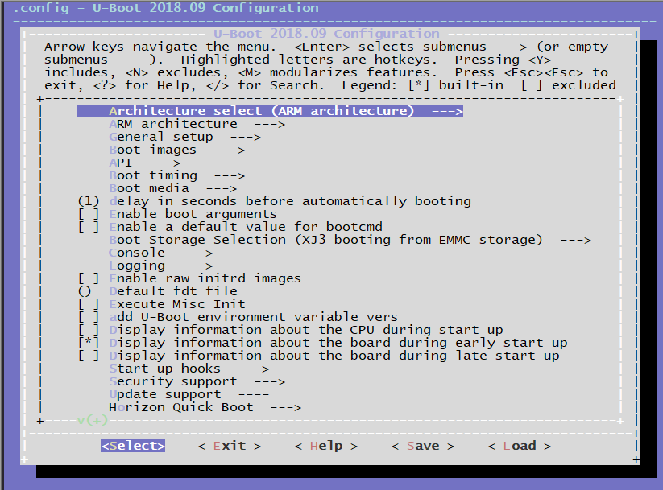
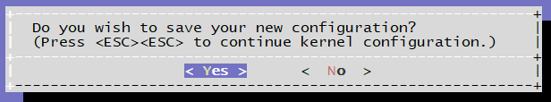

4.3.2. 配置uboot和kernel选项参数
在系统软件开发中，经常需要对uboot和Kernel的功能选项进行配置，本章节介绍几个常用的配置方法，供用户参考使用。
4.3.2.1. 配置uboot选项参数
首先进入uboot目录，执行make ARCH=arm64 xj3_soc_defconfig 。因为make命令将首先执行顶级目录下的 Makefile 文件。其中对于以config结尾的目标都有一个共同的入口：
%config: scripts_basic outputmakefile FORCE
$(Q)$(MAKE) $(build)=scripts/kconfig $@
展开后的执行命令是：
make -f ./scripts/Makefile.build obj=scripts/kconfig xj3_soc_defconfig
本命令执行后会在uboot的源码根目录下会生成 .config的文件。
make ARCH=arm64 xj3_soc_defconfig
HOSTCC scripts/basic/fixdep
HOSTCC scripts/kconfig/conf.o
YACC scripts/kconfig/zconf.tab.c
LEX scripts/kconfig/zconf.lex.c
HOSTCC scripts/kconfig/zconf.tab.o
HOSTLD scripts/kconfig/conf
#
# configuration written to .config
#
然后就可以执行make ARCH=arm64 menuconfig打开图形化的配置界面进行uboot的选项参数配置。

在menuconfig的配置界面上完成配置后，选择 Exit退出，根据提示选择 Yes 或者No保存修改到.config文件中。

保存配置后，可以执行命令 diff .config configs/xj3_soc_defconfig 对比一下差异，再次确认一下修改是否符合预期。
如果修改正确，请执行 cp .config configs/xj3_soc_defconfig替换默认的配置文件。
4.3.2.2. 配置kernel选项参数
通过menuconfig方式配置kernel与配置uboot的的过程是一样的。命令执行过程如下：
首先进入boot/kernel目录，然后按照以下步骤配置kernel选项。
使用
xj3_perf_defconfig来配置生成.config，如果源码做过全量编译，则.config文件会配置好
make ARCH=arm64 xj3_perf_defconfig
执行以下命令来修改配置
make ARCH=arm64 menuconfig
修改后，可以先看看修改后和修改前的差异
diff .config arch/arm64/configs/xj3_perf_defconfig
把新配置覆盖
xj3_perf_defconfig
cp .config arch/arm64/configs/xj3_perf_defconfig
在进入到
build目录执行编译
./xbuild.sh boot